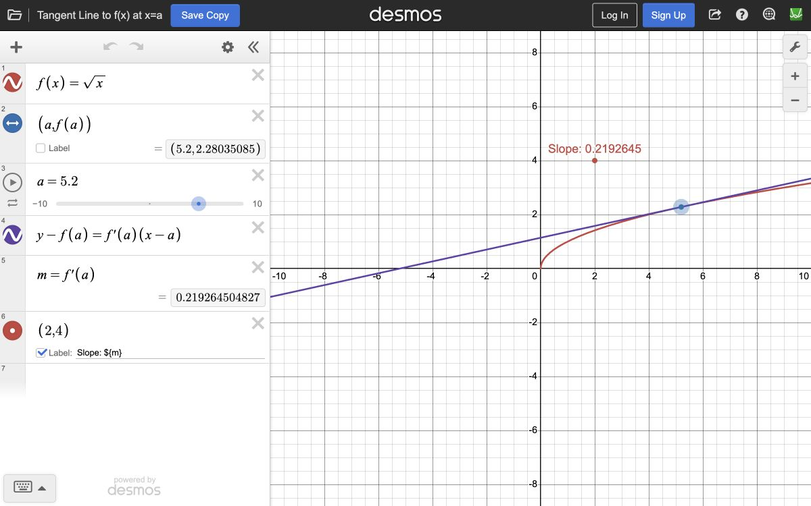
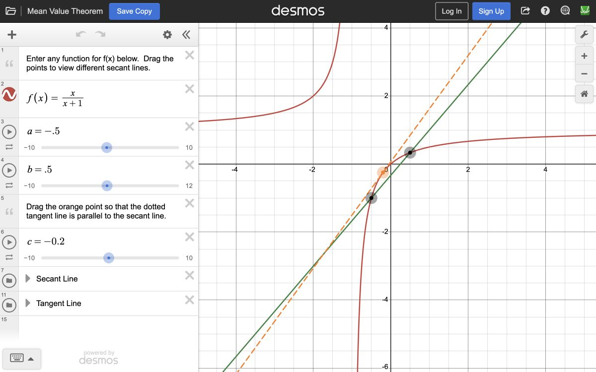
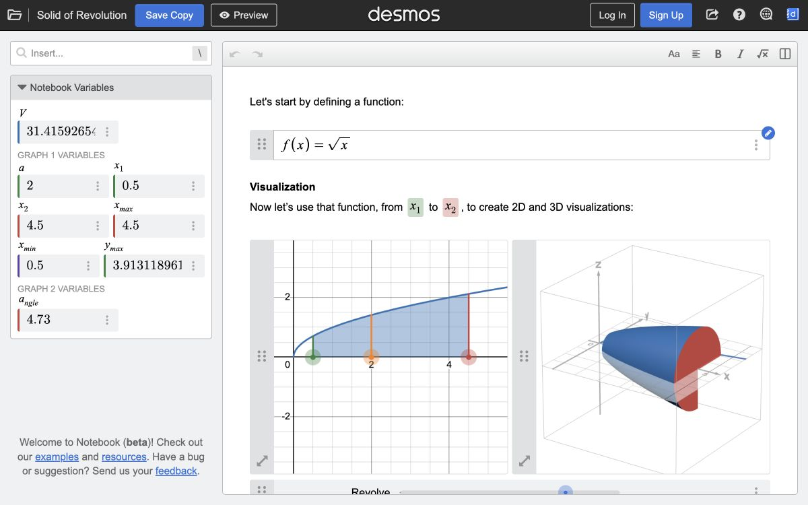
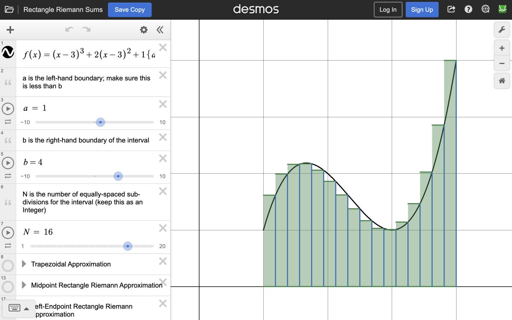
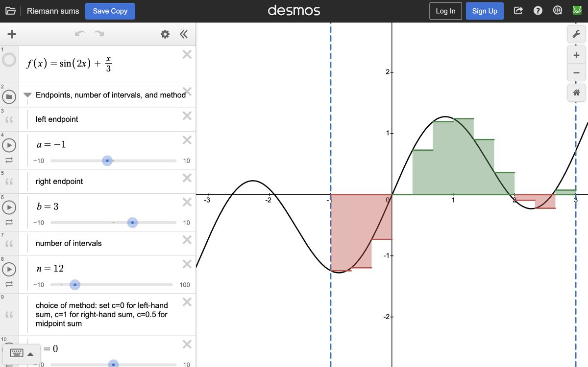
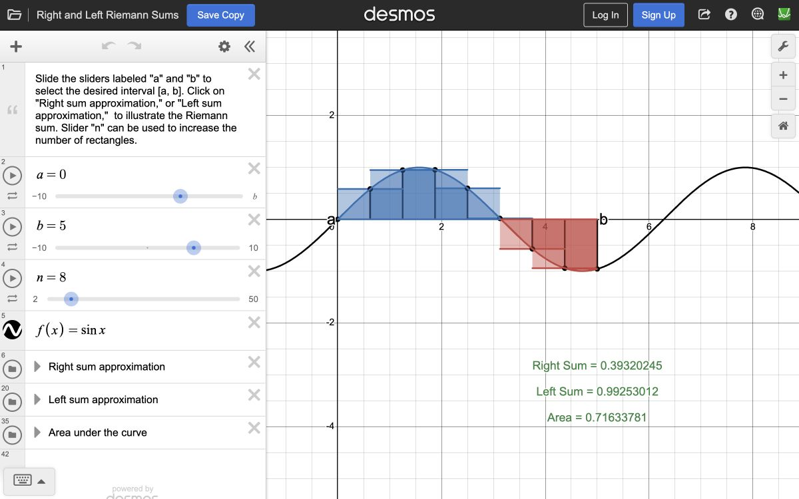
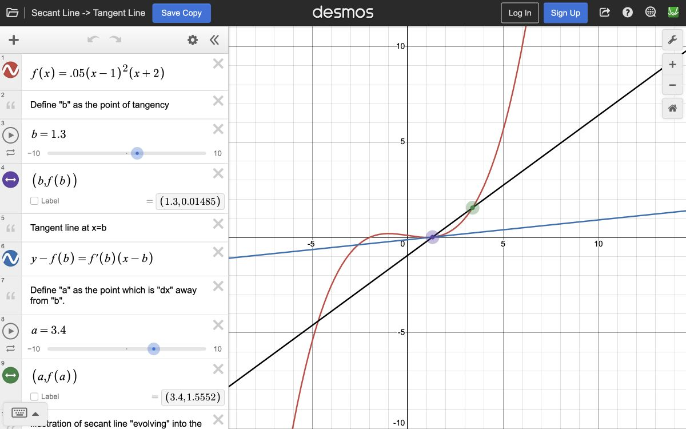
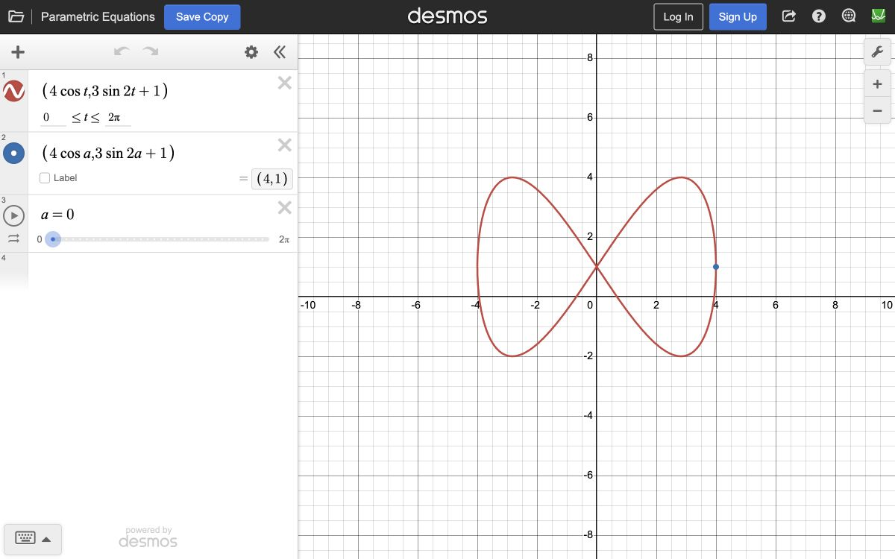

Open in Desmos ↗Tangent Line to f(x) at x = a
Move the point of tangency and connect the derivative to the slope of the tangent line.
Interactive graph collection

Open in Desmos ↗Move the point of tangency and connect the derivative to the slope of the tangent line.

Open in Desmos ↗Compare an interval’s average rate of change with the matching instantaneous rate of change.

Open in Desmos ↗See a two-dimensional region become a three-dimensional solid through rotation.

Open in Desmos ↗Adjust the number of rectangles and watch an area approximation become more precise.

Open in Desmos ↗Explore rectangular approximations and the role of signed area in a definite integral.

Open in Desmos ↗Contrast left- and right-endpoint estimates on the same function and interval.

Open in Desmos ↗Watch a secant line approach a tangent line as the two points move together.
Interactive graph collection

Open in Desmos ↗Trace a curve through paired coordinate functions and explore how the parameter shapes its path.